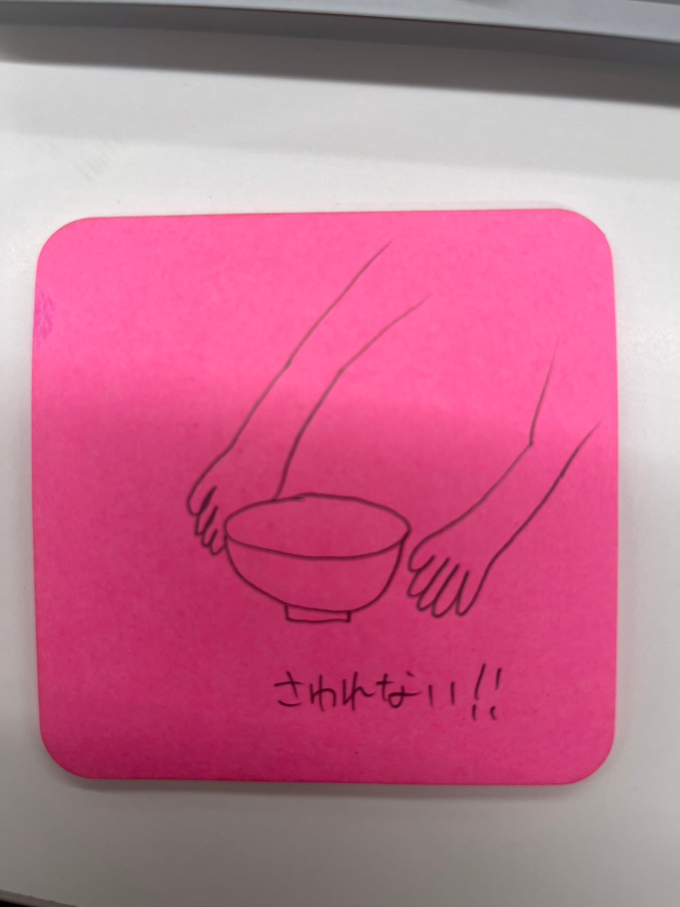

<div>世の中に存在する課題の発見

<title>世の中に存在する課題の発見</title>
</div>

<body><div>
<h1>[課題]</h1>

<h1>①アイディア出し</h1>
・バイト先の料理を持っていくときにお皿が熱くて火傷する<br>

<h1>②アイディアを形に</h1>

<br>

</div>


<ul class="tab">
    <li class="tabItem noselected" contentId="content1"><a href="../index.html">HOME</a></li>
 
    <li class="tabItem noselected" contentId="content3"><a href="../digi_fab/index.html">デジタルファブリケーション</a></li>


</div></body>